その３
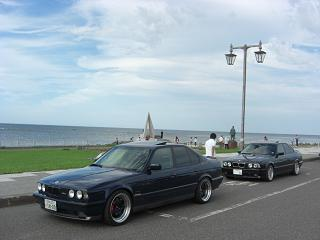 着きました。 最北端の地、宗谷岬です。
|
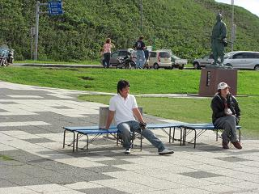 旭川から、250ｷﾛぐらい走りました。 同行して下さったミカミンさんは、ご自宅から旭川まで更に80ｷﾛほどあったようで。。 330ｷﾛの道程（＾＾； 「やっと着いた～！」と休憩中のミカミンさん
|
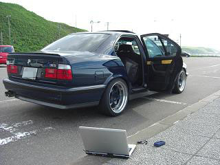 ここで、問題が明らかに。 その２で書いたように、あの辺りを走っている頃から「なにか刺激臭がするなぁ・・・」と思っていました。 その時は、まさか自分の車とは思わず「きっと何か外の臭いだろう」と気にとめませんでした。 しかし、その刺激臭はだんだんと強くなってきて・・・エアコンを付けるとモロに臭ってきます。 そのうちに咳き込んできて目が痛くなってきました（笑 ←笑い事じゃない（＾＾； 「こんなとこで壊れやがってこのボンクラが！」 なんて、思いながら窓を全開にして宗谷岬へ。 この臭いは、バッテリーかも？とリヤシートをめくるとそこには・・・ 触れないほどに熱くなって、液漏れしているバッテリーがありました。。 比較の為に、ミカミン号のバッテリーを触ってみると、全然熱くありません。 実は、この北海道オフの前に予防整備でオルタネーターを交換したのです。 コイツが原因かも？ってことで、とりあえず交換てもらったディーラーへ電話を。。 Ｍゴロー：「あのー、バッテリーが熱くなって液が漏れてるんですが。。」 ディーラー：「きっとオルタのオーバーチャージですねぇ。今どこですか？」 Ｍゴロー：「宗谷岬なんですが。」 ディーラー：「・・・えぇ！北海道の？」 Ｍゴロー：「はい（ショボーンってなりながら）」 ディーラー：「ボクらが助けられる範囲を超えてますわ」 そりゃそうでしょう。 一番近い北海道のディーラーでもここからだと400ｷﾛ離れています。 そんな会話があり途方に暮れていると・・・ その横で、ミカミンさんが北海道軍団の方々や行き着けのディーラーの方に電話で その場を乗り切る為のアドバイスを聞いて下さいました。 その中で、たにやんさんが「ＤＤさんのＨＰにＯＢＣで電圧を表示する方法が載っている」と 「これだ！」と思い携帯電話でアクセスを試みるも容量が大きく開けず撃沈 他の手を考えること数秒・・・ パソコンを持ってきていることに気づきました。 また「これだ！」と思い観光客の目なんて気にせず、ネットに繋ごうとするも電波が無く撃沈。。 さらにヘコむ。。 画像はその時の１枚 その後、電話でDDさんにOBCでの電圧の見方を教えていただき。。
ＤＯＰさんに、対処法と的確なアドバイスをいただきました。 ありがとうございましたm(__)m
|
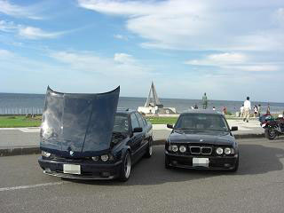 せっかく来たんだから。 ってことで、「日本最北端でのE34ボンネット上げ」を＾＾/ ミカミン号は、ダンパーの元気がなく立たなかったので。。 浮かせた
|
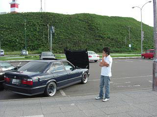 その後も おくさんが、解体業者に535のオルタがあるか聞いて下さったり。。 メカニックさんから電話があったりで、ミカミンさんのケータイが鳴りっぱなしに。 かなりお世話かけました^^;一人だとどうなっていたことか（笑
|
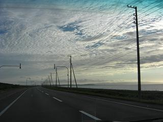 帰りもまた250ｷﾛ帰らないといけません。。 「バッテリーが爆発するかもしれない」とか メカニックさんの話では、「最悪ライトが消えるかもしれない」なんて話がありました。 ここへ来る道中の森へ入れば、しばらくコンビニどころか街灯すらありません。。 明るいうちに、先を急ぎたいところですが、、
|
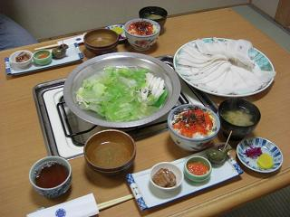 「ここまで来れば一緒でしょ！」ってことで、名物のタコしゃぶを＾＾ この時、気持ちは「爆発でも炎上でもどうにでもなれや」状態でした（笑
|
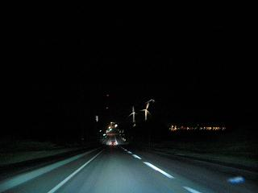 とは思いつつも、、 森の中は、動物の飛び出しなど不安が多かったので海沿いを走って帰ることに。 中央右側に見えるのは、ライトアップされた風力発電機 発電してるのに、ライトアップに電気使ってるってどうなんでしょう？
|
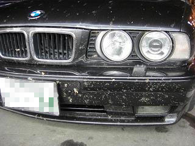 OBCの電圧計とにらめっこしながら走ること100ｷﾛ、コンビニを発見＾＾ 画像は、先頭を走っていたミカミン号のフロント。。 虫が雨のように当たってきます。。
|
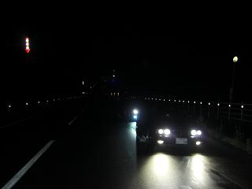 旭川へ抜ける峠道での１枚 ライトを消せば、見渡す限り何も明かりがありません＾＾； 途中、数箇所でキツネが飛び出してきました 「6灯ＨＩＤで良かった」とミカミンさん。
|
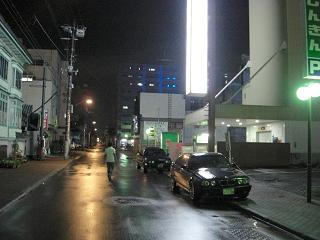 無事に旭川へたどり着いた写真（手前ミカミン号） お疲れのところ、「もし、止まったら。。」とミカミンさんがホテル前まで送って下さいましたm(__)m ここまでずっと電圧は安定していた。 数時間前のアレはなんだったんだろう・・・＾＾；
|
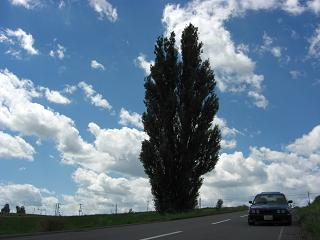 明けて翌日 最終日です。 ホテルを出て、漏れたバッテリー液を掃除して ２日前に雨だった美瑛～富良野を経由して小樽へ向かいます。
|
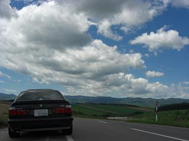 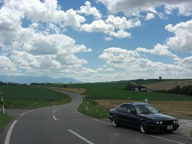 やっぱり晴れは気持ちイイ！
|
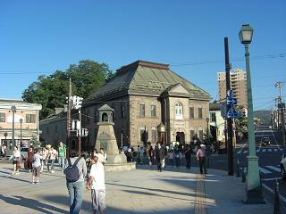 車の様子を見ながら走っていたので、小樽につくと既に夕方、 適当にブラブラしてみます。
|
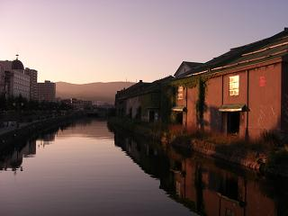 素人が、適当に撮ってもこんな綺麗な写真が撮れました。 |
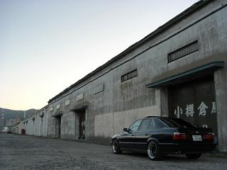 小樽運河は、人がイッパイだったのでこちらで1枚 |
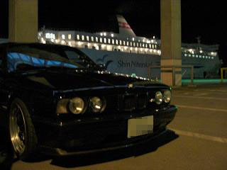 こんなことをしているうちに、フェリー乗船の時間に。。 後ろに見えているのが、帰りのフェリー 一時は、どうなることかと思ったけど何も無く小樽まで来れた＾＾/
|
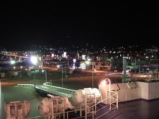 さらば北海道！の図 今回は、E34北海道軍団の方々に大変お世話になりました。 北海道も、濃い方々ばかりで良い思い出になりました。 また、機会があればE34で北海道を走ってみたい＾＾/
|
後日談・・・ 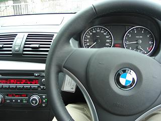 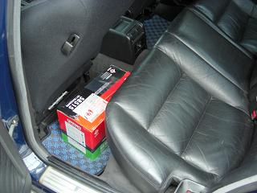 翌日、ディーラーへ いろいろ調べてもらった結果、レギュレーター不良でオルタネーター交換（保証）となりました。 修理の間、いつもは出ない代車（画像左）を用意してくれたりと気持ちのいい対応でした。 バッテリー（画像右）は、自腹となりました（＾＾； |
| 戻 る |